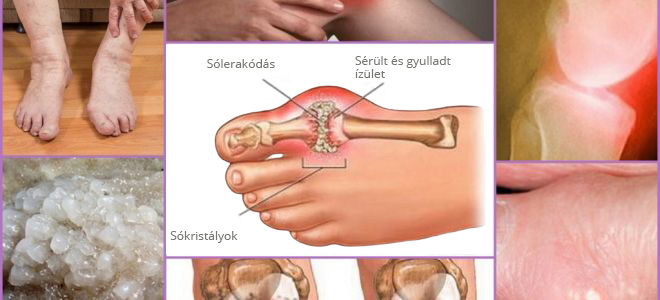

" Már rég
megtalálták az ízületi betegségek ellenségét " A híres német reumatológus őszinte
interjút adott a magyar kiadványnak.
Medical News - Magyar változata
21.02.2022 09:26
Hogyan gyógyítsuk meg az ízületeket egyszer és 10 évre?
Hogyan távolítsuk el a sót az ízületekből és teljes értékű életet éljünk?
Miért 9 orvos a 10-ből Magyarországon nem tudja,hogy hogyan kell megfelelően kezelni
az ízületeket?
Ezekre a kérdésekre a német reumatológia professzora, Karl Kirchmeyer válaszol.
Dr. Karl Kirschmayer - a berlini Eva
Mayr-Stihl Tumorzentrum reumatológiai központjának vezetője, a világhírű Charite
klinikán.
Mindössze egy oka van az ízületi betegségeknek, de pont azt hagyja figyelmen
kívül a 10 magyar orvosból 9.
Doktor Karl Kirschmayer: "Magyarországon az ízületi betegségeket továbbra is
elavult és hatástalan gyógyszerekkel kezelik, amelyek a betegek egész életük
során állandó szedést igényelnek. Míg Európában az ízületeket ugyan olyan
egyszerűen kezelik, mint egy náthát."
Tavaly Karl Kirschmayer ellátogatott Magyarországra, hogy tanulmányozza a magyar
kollégáinak tapasztalatait. Amit itt látott, annak nincs magyarázata. Hazánkban
Karl szerint a reumatológia a múlt század közepén ragadt le.
A kiemelkedő németországi előadásokat követően Dr. Karl
Kirschmayer beleegyezett abba, hogy interjút adjon a magyar kiadványnak. Mi nem
tetszett a magyar egészségügyben a híres orvosnak? És miért állítja
azt, hogy a beteg ízületekkel rendelkező MAGYAR ÁLLAMPOLGÁROK soha nem lesznek
képesek egészségesen élni.
- A német újságírókkal beszélgetve ön azt mondta, hogy az, amit Magyarországon
látott, sokkolta önt. Kifejtené ezt bővebben,kérem?
Leszögezném, hogy nagyon jó viszonyulok Magyarországhoz, a magyar kultúrához és a
magyar állampolgárokhoz. De az, hogy milyen állapotban van az egészségügy,
valóban megdöbbentő. Az egészségügy legalább 20, de talán mind a 30 év-el le van
maradva. Mindenesetre,
ami az ízületek és izom-csontrendszeri betegségek kezelését jelenti. Azt
mondhatjuk, hogy Magyarországon nem létezik olyan tudomány, mint reumatológia.
A magyarországi orvosok általában vagy szintetikus gyógyszereket írnak fel, vagy
tanácsot adnak a hagyományos orvoslásból. Ez nem hatékony az ízületek kezelésére.
Így NEM KEZELIK AZ IZÜLETEKET ÉS PORCOKAT, nem elég a betegség tüneteit -
fájdalom, gyulladás, duzzanat - csillapítani. Képzelje el, mi történik a
szervezet szintjén. Amikor valaki be vesz egy tablettát, érzéstelenítő gélt
massziroz be vagy injekciót
kap - a fájdalom elmulik. De amint a gyógyszer hatása megszűnik - a fájdalom
azonnal visszatér.
Az érzéstelenítés csak ideiglenesen enyhíti a fájdalmat, de nem szünteti
meg annak az okát
Viszont a fájdalom - az egy fontos mutató, jelzi, hogy az
ízületben patológiás folyamat zajlik. Fájdalomcsillapításkor az érintett ízületek
még nagyobb pusztító hatásnak vannak kitéve. A pusztulási folyamat
3-5-szer felgyorsul és végül visszafordíthatatlan elváltozásokhoz vezethet,
teljes mozgáskorlátozáshoz és rokkantsághoz.
Ezt az ízületi fájdalmak kezelésének módszerét nálunk már 20 éve nem alkalmazzák.
A fájdalomcsillapítókat csak szélsőséges esetekben használják, nagyon precízen és
pontosan. Németországban csak vényre és szigorú ellenőrzés mellett értékesítik
őket.
Egyértelmű, hogy a tünetek kiküszöbölésére szolgáló gyógyszerek folyamatos, magas
áron történő értékesítése sokkal jövedelmezőbb, mint egyszer és mindenkorra
meggyógyítani a beteget, helyreállítani az ízületet... szóval ez szinte
felháborító!
- És mi a helyzet Németországban az ízületek kezelésével?
- Az összes német orvos, a reumatológiai professzoroktól
kezdve a belgyógyászokon át a feldcserig, régóta megértette, hogy nem a betegség
következményeit kell kezelni, hanem az okait. Ez a kulcs a teljes,
gyors és biztonságos kezeléshez. És mi az ízületi fájdalmak fő oka? Ez a só
lerakódás a vérkeringési és az ízületi folyadék keringési zavarok miatt.
Az ízület felületére lerakódott só, mint a csiszolópapír,
bántja a környező szöveteket - a csontokat és a porcot. A növekvő
sókristályok az izomszövet, az inak, az erek és a kapillárisok roncsolását
eredményezik. Ez gyulladást, fertőzést, duzzanatot és súlyos fájdalmat okoz.
Előrehaladott esetekben a nagy mennyiségű sólerakódások
felhalmozódása a hirtelen mozgás során könnyen megtörheti a csont egy részét, ami
teljes rokkantsághoz és az ízület tartós mozdulatlanságához vezet.
Ezért a német reumatológusok elsősorban a beteg ízület vérkeringését állítják
helyre oly módon, hogy az évek során felhalmozódott sólerakódások eltávolításra
kerüljön.Ez helyreállítja a szinoviális folyadék normál keringését és elindítja
az ízületi szövetek
helyreállítási folyamatát.

Az sólerakódások halmozódása az izületek felületén - kiváltó ok a kóros
folyamatoknak.
Valójában az emberi ízületek nagyon jól regenerálódnak, önállóan képesek
helyreállni, mint a gyík farka. Csak egy kicsit segíteni kell nekik - mentesíteni
őket a hozzájuk tapadó sótól, és a folyamat önmagában elindul.
Múlt század 90-es éveiben a svájci tudósoknak sikerült
elsajátítaniuk a kvázi B-vitaminjának egy speciális összetételét, amelyet
"alfa-arthroferolnak" hívnak. Ez a beteg ízületek lehető legerősebb
ellensége, mivel a porcszövet helyreállítására irányuló hatása nagyon erős
és nincs analógja.
Ez a hatóanyag képes beépülni az sókristályok molekuláiba, és belülről szétzúzni
őket
- ennek eredményeként megtisztulnak az ízületek felületei, helyreáll a
vérkeringés és az ízületi folyadék keringése. ÖRÖKRE! Illetve addig, amíg a só
újra fel nem halmozódik
(de ez több évtizedet is igénybe vesz). NEM SZÜKSÉGES használni gyógyszereket
ahhoz, hogy megszabaduljon a fájdalomtól és gyulladástól. Nem kell attól
tartania, hogy az izületek örökre begyulladnak,
és akkor teljesen el fogja veszíteni a mozgékonyságát, és protézisre lesz
szükség.
Amikor megláttam a magyar orvosi statisztikákat, a hajam égnek állt. Tudja, mi a
leggyakoribb rokkantság oka Magyarországon? Nem a rák, sem az AIDS, sem a
cukorbetegség, hanem ízületi gyulladás! A sima ízületi gyulladás, amelyet
Németországban 2-3 hét
alatt kezelnek a legolcsóbb gyógyszerrel, Magyarországon rokkantsághoz vezet!
Manapság Németországban az ízületi betegségeket nem tekintik veszélyes
patológiáknak, kivéve természetesen a súlyos traumás sérüléseket: töréseket,
zúzódásokat, stb. Az ízületek fájdalma és gyulladása csak arról árulkodik, hogy
sóval "szennyeződtek",
és itt az ideje megtisztítani őket. 2-3 hetes „tisztítás” után az ízületek
normalizálódnak, és a következő évtizedre el lehet felejteni a problémákat.
- Hogyan "tisztítják" az ízületeket Németországban?
- Ma vannak speciális készítmények, amelyek célja az
ízületek megtisztítása a sólerakódásoktól. Alfa-arthroferolt tartalmaznak.
Közülük a vezető az
Cream. Különleges, könnyen felszívódó
formában tartalmaz alfa-arthroferolt, melynek köszönhetően a gyógyszer nagyon
hatékony. Az az
egyetlen
GSP-en engedélyezett
termék, amely igazolja biztonságát otthoni használatra ízületi betegségek
kezelésében.
Az
másik fontos előnye,
hogy vitaminok,
makro- és mikroelemek komplexumát tartalmazza, amelyeknek célja az ízületi
szövetek működésének javítása. Vagyis átfogó
gyógyító hatással van a csontra és a porcra, ízületi folyadékra, izomrostokra,
ízületi és ínszövetekre. A komplex hatások nagyon gazdag spektruma
Az
számos összetevőt
tartalmaz. Nem
sorolom fel az egészet, csak a legfontosabbat:
Arnica kivonat
Tágítja az ereket, javítja a vérkeringést, helyreállítja a sérült
szöveteket és enyhíti a gyulladást, nyugtató hatással rendelkezik
Mentol
Enyhíti a fájdalmat és hidratálja a bőrt, helyreállítja a
hámréteget, segíti a fájdalom és a görcsök enyhítését.
Felgyorsítja a regenerációs folyamatokat, javítja a
mikrocirkulációt az alkalmazás helyén, serkenti a bőr
anyagcseréjét
Eukaliptusz olaj
Antimikrobiális tulajdonságokkal rendelkezik, ellenáll a
fertőzéseknek. Tanninokban, gyantákban, illóolajokban gazdag,
felgyorsítja az anyagcserét a gerinc szöveteiben
Kámfor olaj
Enyhíti a gyulladást, antioxidáns és tonizáló tulajdonságokkal
rendelkezik. Hatékony arthritis, arthrosis és ízületi
gyulladásoknál
- Az ,
amennyire tudjuk,
nem értékesítik
az magyar gyógyszertárakban?
- Hát ez az, hogy nem. Az magyar orvosok inkább tonna érzéstelenítővel és hondro
protektorokkal „etetik” a lakosságot, ahelyett, hogy valódi kezelésben
részesítenék.
Ezenkívül nem kétséges, hogy a magyar reumatológusok,
legalább is azok, akiket érdeklik a fejlett kezelési módszerek, ismerik az és
annak regeneráló képességeit.
De nem kockáztatják olyan gyógyszer felírását, amely nem szerepel az Egészségügyi
Minisztérium jegyzékében.
Tudomásom szerint az
gyártó be szeretett
volna jutni a
magyar piacra. De ezt nem engedték meg, kitalálva századnyi akadályt . Érthető -
ha ez a gyógyszer megjelenik
a gyógyszertárakban, akkor az magyar gyógyszertári maffia hatalmas veszteségeket
szenved. Valójában a farmakológia manapság üzlet! Még a pedantikus Németországban
is. De üzletünk állami ellenőrzés alatt
áll, viszont mi történik Magyarországon, azt nem ítélhető meg, önök jobban tudják
- Mit tanácsolna magyarországon ízületi fájdalmakkal élő embereknek?
- Az egyszerű emberek, különösen az 50 év feletti emberek szenvednek leginkább az
adott problémától. Ez nem az ő hibájuk, testünk egyszerűen így van elrendezve.
De szerencsére meg van a megoldás! Megállapodtunk az
Magyar Reumatológiai Kutatóközponttal abban a lehetőségben, hogy a gyógyszert
kedvezményes áron értékesítsük minden olyan magyar polgár számára, aki ezekkel
a problémákkal küzd. Az MRKK munkatársai létrehoztak egy speciális elosztó
központot, és mi biztosítottuk a szükséges gyógyszermennyiséget. Ezért most
Magyarország bármely lakosa megfizethető áron megrendelheti
házhozszállítással. Azonnali kézbesítés és nem kell előre fizetni!
Az már három hónapja
értékesítjük. Ez a
lehetőséget már több ezer magyar állampolgár kihasználta. Arra kérünk mindenkit,
aki megkapta az ,
hogy értékelje 1-10-es skálán, hogy a termék mennyire segített neki. Jelenleg
több mint 3000 ember vett részt a felmérésben és 10-ből átlagosan 9,83 pontszámra
értékelték a terméket.
Mint láthatja, az
segített magyar
állampolgárok ezreinek
mobilitásának visszaszerzésében és a fájdalom megszabadulásában, és ön is köztük
lehetne.
- Meddig értékesítik a gyógyszert alacsony áron?
- Amíg a kiosztott készlet tart. De azonnal figyelmeztetni
akarok mindenkit, hogy nagyon kevés promóciós termék maradt. A rendelések ugy
növekednek, mint egy hógolyó. Szájról szájra működik a hiresztelése,
az emberek információt továbbítanak egymásnak, tanácsot adnak a barátoknak és
megrendelik rokonok számára. Mi nem is számítottuk arra, hogy az
szóló információk
ilyen gyorsan elterjednek.
Amíg a gyógyszer készlet még tart, azt javaslom, hogy minden 45 év feletti ember
rendelje meg promóciós áron a hivatalos weboldalon:
Én azok közé tartozom,
akiknek már sikerült kipróbálni
az .
Ő
valóban a legjobb. Én ízületi
gyulladásos vagyok, tapasztalattal - ez a betegség már 7 éve kínoz
engem. Már készen álltam arra, hogy egész életemben tablettákat kell szednem
és injekcióznom magam, de végül az
kúra után a fájdalom
elmúlt.
Teljesen
eltűnt. Mindenkinek ajánlom - segíteni fog!
63 éves vagyok. A térdeim 53 éves korom óta fájnak. Az utóbbi időben a
fájdalom teljesen elviselhetetlenné vált. Egy ismerős orvos (gyermekkori
barátom) 3 hónappal ezelőtt beszélt erről a programról, és azt tanácsolta ,
hogy szedjem ezt a gyógyszert Most
úgy ugrálok, mint egy hegyi ... Bár nem, ez nem szükséges. Szóval most már
ugrálok! A termék - egy tűz!
Az orvosok fő célja, ahogyan én azt látom az, hogy minél több pénzt
“préseljenek ki” tőlünk. Ez minden, ami érdekli őket. Félévente injekciókat
kaptam. Idén ősszel olyanokat írt fel, hogy féltem szedni. Hiszen az orvos meg
sem nézte hogy milyen más betegségeim
vannak, és hogyan fogják befolyásolni ezek a gyógyszerek a szervezetem.
Abszolút közömbösség és azoknak a gyógyszereknek a felírása, amelyekért a
gyóygszergyártótól visszatérítést kapnak. Lehet,
hogy másutt másképp van, habár de nem vagyok benne biztos. Ez a mi
egészségügyünk. Viszont erről az új termékről a jó híreket kaptam!
Igen, hazánkban csak meghalni lehet. 69 éves vagyok. Már a társaim kétharmada
meghalt, a többiek alig mozognak, a karok, lábak és a hát állandó fájdalma
miatt ... Érdemes megfontolni.
A termék tényleg nagyon jó. Tavaly nyáron kezeltek vele magam (fiam külföldről
hozta). A köszvény elmúlt! Mai napig nincs tünet. Magam is meglepődtem. 5 +
érzem magam. Mindenkinek ajánlom ezt a terméket. Különösen akkor, ha bónuszos!
Nekem is megtetszett ez a
termék. Eleinte mit ki nem
próbáltam, de egy idő után semminek sem volt hatása. Aztán elmentem az
orvoshoz, és ő azt tanácsolta nekem, hogy próbáljam ki az új
krémet (a fiatal orvos valószínűleg még mindig hisz abban, hogy az egészségügy
az emberekért van, nem pedig a pénz "préseléséhez"!).
már az első alkalom
után segített nekem - a fájdalom szinte azonnal eltűnt, amint befejeztem a
kúrát, amit az orvos javasolt. 3 hét után elfelejtettem, mi a fájdalom.
Csodálatosan érzem magam, mint fiatal koromban!
A szomszédom 72 éves,
gyakran panaszkodott
derékfájásra. De az elmúlt hónapban aktívnak és vidámnak látom. Azt mondta,
hogy használta az ,
amit az unokája
hozott neki valahonnan.
Miközben a német fórumokon
olvastam az véleményeket az
,
majdnem lekéstem a rendelésről! De hála Istennek, sikerült kitöltenem az
adatlapot. És még ennyi
pénzért sikerült megkapnom, ami szintén nagyon jól esett.
Az ízületi betegek egyik
fórumán megismertem az .
Sokan büszkélkednek az eredményekkel. Én is úgy döntöttem, hogy
megrendelem.Csak 3 napig használom, és már
mindenben észrevehető a javulás. A fájdalom teljesen elmúlt, a ropogás
észrevehetően csendesebbé vált, továbbra is fennáll a kis ödéma, de sokkal
jobb, mint volt. Szóval a kúra eredményei alapján
írok, de a kezdete kellemes.
Köszönöm. Megrendeltem magamnak és a férjemnek is. Megkérdeztem a tanácsadót,
hogy mikor fogják értékesíteni a gyógyszertárban - azt mondta, hogy egyenlőre
nem tudni. Ezért gondoltam, talán ez az egyetlen lehetőség a termék
kipróbálására.


Vélemények